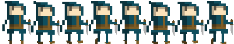
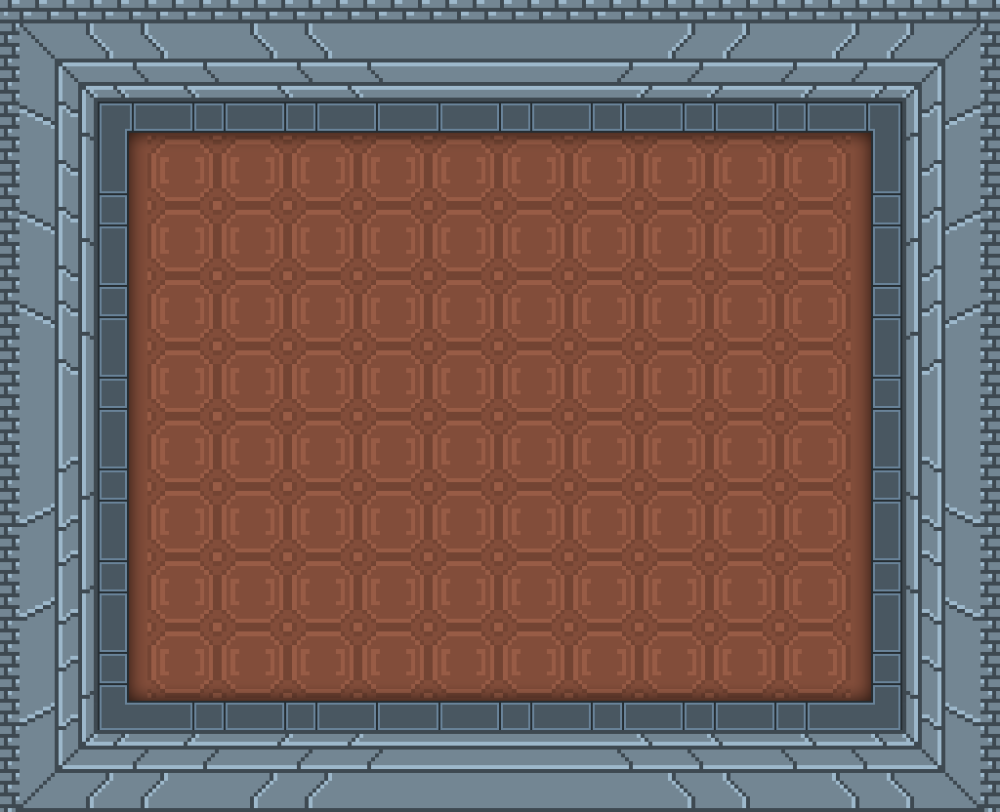

Click MeDays without null pointer exceptions: 0
-
DarkChaos Games
DarkChaos Games Is an independent video game group founded by three enthusiatic Indie Game Developers known by our gamer tags as Chaos1213g, ChiefBlueScreen, Darkmastermindz. Our passion is to make games and enhance lives of others and making games on a whole new level. In the end, it's all about the community sending in ideas for the most ridiculous and fun game concepts and us creating the best game possible [See About the Staff]. Send us your project updates and we might just feature it here.
Featured Project:
Darkus Rising
#01 Early Alpha Graphics
Our main project game in production is an Adventure game that features the protagonist going through rooms in a retro Dungeon-Crawl game. It is expected that this game will be available online by Fall of 2020. That's a long ways to go so here is a taste of the drafted art done by our graphic artist torn from our early-alpha progress:
You may just be a thief and be eager to find treasure. Here is one of the main character sprites moving to the right-right-right...right..right with a knife. There are 4 playable characters to be released by final release of Darkus Rising, so check back for more content!

There were many rooms but after many trials the game ended up with this template:
